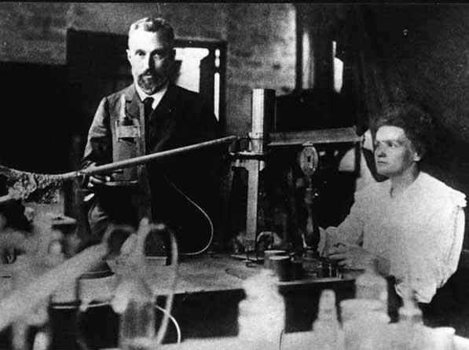
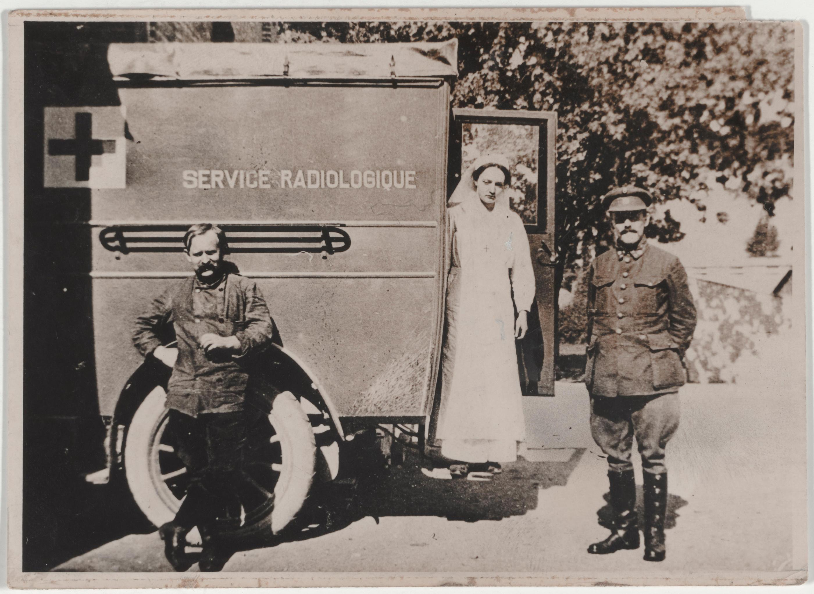
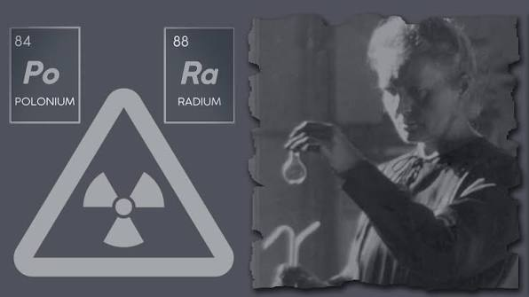

01Vật lý hiện đại
Nghiên cứu của Curie góp phần thúc đẩy việc khảo sát bản chất của hiện tượng phóng xạ.
TÁC ĐỘNG LÀM THAY ĐỔI THẾ GIỚI
Tác động của Marie Curie không chỉ nằm trong các phát hiện của bà, mà còn ở cách nghiên cứu khoa học tiếp tục ảnh hưởng đến vật lý, hóa học, y học và hình dung của xã hội về người làm khoa học.

KHOA HỌCẢNH HƯỞNG LIÊN NGÀNH

01Nghiên cứu của Curie góp phần thúc đẩy việc khảo sát bản chất của hiện tượng phóng xạ.

02Công trình về polonium và radium giúp mở rộng hiểu biết về các nguyên tố và đặc tính của chúng.
 03
03
Việc đưa thiết bị X-quang lưu động đến hỗ trợ y tế thời chiến cho thấy giá trị thực tiễn của kỹ thuật hình ảnh.
CÂU HỎI TRỌNG TÂM
Đây là một giả định lịch sử, không thể khẳng định chắc chắn. Tuy vậy, từ những đóng góp thực tế của bà, chúng ta có thể đưa ra một số lập luận hợp lý.
Nếu không có các công trình của Curie và cộng sự, việc nghiên cứu polonium, radium và phóng xạ có thể đã đi theo tiến trình khác hoặc cần thêm thời gian để đạt một số kết quả. Những nhà khoa học khác vẫn có thể tiếp tục nghiên cứu, nhưng bản đồ phát triển của lĩnh vực này có thể khác.
Các đóng góp của bà giúp thúc đẩy nghiên cứu về bức xạ và góp phần đưa X-quang vào hỗ trợ y tế thời chiến. Thiếu đi sự tham gia của bà, một số nỗ lực ứng dụng có thể đã phát triển theo cách hoặc tốc độ khác, dù không thể kết luận rằng chúng sẽ không xuất hiện.
Hành trình của Curie trở thành nguồn cảm hứng cho nhiều thế hệ, đặc biệt là phụ nữ theo đuổi khoa học. Nếu không có câu chuyện ấy, thế giới sẽ thiếu một ví dụ có sức ảnh hưởng về sự bền bỉ, hợp tác và đóng góp khoa học vượt qua rào cản xã hội.
Vì vậy, điều có thể nói một cách thận trọng là Marie Curie đã góp phần định hình một phần lịch sử khoa học; thế giới có thể vẫn tiến lên, nhưng con đường và thời điểm của một số khám phá có thể khác đi.
DI SẢN CÒN TIẾP DIỄN
Những thành tựu khoa học hiếm khi thuộc về một cá nhân duy nhất. Di sản của Curie vừa nằm ở các công trình cụ thể, vừa ở việc mở rộng câu hỏi mà cộng đồng khoa học tiếp tục theo đuổi. Tác động của bà cần được hiểu trong sự đóng góp của đồng nghiệp và các thế hệ nghiên cứu nối tiếp.